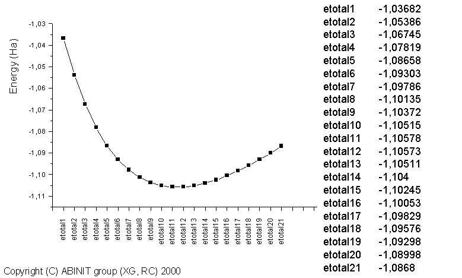

Base1
¶
This lesson aims at showing how to get the following physical properties:
- the (pseudo)total energy
- the bond length
- the charge density
- the atomisation energy
You will learn about the two input files, the basic input variables, the existence of defaults, the actions of the parser, and the use of the multi-dataset feature. You will also learn about the two output files as well as the density file.
This first lesson covers the sections 1, 3, 4 and 6 of the help_abinit.
The very first step is a detailed tour of the input and output files: you are
like a tourist, and you discover a town in a coach. You will have a bit more
freedom after that first step ...
It is supposed that you have some good knowledge of UNIX/Linux.
This lesson should take about 2 hours.
1.1. The first step (the most important, and the most difficult !):¶
Computing the (pseudo) total energy, and some associated quantities.
Note that the present tutorial will use four different windows: one to visualize the text of the tutorial (the present window), a second to run the code, a third to visualize sections of the help_abinit (that will open automatically), and a fourth one for the description of input variables (that will also open automatically). Try to manage adequately these four windows ...
1.1.a In addition to the present window, open the second window. Go to the Tutorial directory (that we refer as ~abinit/tests/tutorial/Input).
$ cd ~abinit/tests/tutorial/Input
In that directory, you will find the necessary input files to run the examples
related to this tutorial. Take a few seconds to read the names of the files
already present in ~abinit/tests/tutorial/Input.
Compare with the lessons mentioned in the index of the Tutorial home page.
You will find other input files, specific for the Density Functional
Perturbation Theory ("Response functions") capabilities of ABINIT in the
directory ~abinit/tests/tutorespfn/Input.
1.1.b You also need a working directory. So, you should create a subdirectory of this directory, whose name might be "Work" (so ~abinit/tests/tutorial/Input/Work). Change the working directory of windows 2 to "Work":
$ mkdir Work
$ cd Work
You will do most of the actions of this tutorial in this working directory. Copy the file tbase1_x.files in "Work":
$ cp ../tbase1_x.files .
1.1.c Edit the tbase1_x.files. It is not very long (only 6 lines). It gives the information needed for the code to build other file names ... You will discover more about this file in the section 1.1 of the abinit_help file. Please, read it now (it will take one minute or so).
1.1.d Modify the first and second lines of tbase1_x.files file, so that they read:
tbase1_1.in
tbase1_1.out
Later, you will again modify these lines, to treat more cases. Make sure that the last line, gives the correct location of the pseudopotential. Close the tbase1_x.files file. Then, copy the file tests/tutorial/Input/tbase1_1.in in "Work":
$ cp ../tbase1_1.in .
Also later, we will look at this file, and learn about its content. For now,
you will try to run the code. Its name is abinit. The place where it can be
found varies, according to the installation procedure. We will denote the
directory where you have installed the package ~abinit. Supposing that you
dumped the binaries from the Web site, then abinit is to be found in the
package, with location ~abinit/opt. If you dumped the sources from the Web
site, and issued ./configure in the ~abinit directory, then it is located in
~abinit/src/98_main. In what follows, we will suppose that you can call it by
simply typing abinit, even if the actual command must be something like
../../../../opt/abinit or ../../../../src/98_main/abinit. (Suggestion: create
an alias with ln -s, or copy the abinit executable, or declare the path with
the shell command export PATH=~abinit/src/98_main:$PATH).
So, in the Work directory, type:
$ abinit < tbase1_x.files >& log
Wait a few seconds ... it's done ! You can look at the content of the Work directory.
$ ls
You should get something like
abinit log tbase1_1.in tbase1_1.out tbase1_x.files tbase1_xo_DDB tbase1_xo_DEN
tbase1_xo_EIG.nc tbase1_xo_GSR.nc tbase1_xo_OUT.nc tbase1_xo_WFK
(if you declared the path, you will not find abinit in the list) Different
output files have been created, including a log file and the output file
tbase1_1.out. To check that everything is correct, you can make a diff of
tbase1_1.out with a reference file tests/tutorial/Refs/tbase1_1.out
contained in the ~abinit/tests/tutorial/Refs directory:
$ diff tbase1_1.out ../../Refs/tbase1_1.out | less
(Perhaps you will need to ignore the blanks, with the command diff -b
instead of diff)
That reference file uses slightly different file names. You should get some difference, but rather inoffensive ones, like differences in the name of input files or timing differences, e.g.:
2,3c2,3
< .Version 8.0.8 of ABINIT
< .(MPI version, prepared for a x86_64_linux_gnu5.4 computer)
---
> .Version 8.0.7 of ABINIT
> .(MPI version, prepared for a x86_64_linux_gnu5.3 computer)
17c17
< .Starting date : Fri 27 May 2016.
---
> .Starting date : Thu 26 May 2016.
27c27
< - input file -> tbase1_1.in
---
> - input file -> ../tbase1_1.in
29,30c29,30
< - root for input files -> tbase1_xi
< - root for output files -> tbase1_xo
---
> - root for input files -> tbase1_1i
> - root for output files -> tbase1_1o
92,93c92,93
< - pspini: atom type 1 psp file is ../../../Psps_for_tests/01h.pspgth
< - pspatm: opening atomic psp file ../../../Psps_for_tests/01h.pspgth
---
> - pspini: atom type 1 psp file is /home/gonze/ABINIT/ABINITv8.0.7/trunk/8.0.7-private/tests/Psps_for_tests/01h.pspgth
> - pspatm: opening atomic psp file /home/gonze/ABINIT/ABINITv8.0.7/trunk/8.0.7-private/tests/Psps_for_tests/01h.pspgth
166c166
< prteigrs : about to open file tbase1_xo_EIG
---
> prteigrs : about to open file tbase1_1o_EIG
214c214
< - Total cpu time (s,m,h): 4.7 0.08 0.001
---
> - Total cpu time (s,m,h): 4.6 0.08 0.001
221,229c221,228
(... and what comes after that is related only to timing ...).
If you do not run on a PC under Linux with GNU Fortran compiler, e.g. the Intel compiler, you might also have small numerical differences, on the order of 1.0d-10 at most. You might also have other differences in the paths of files. Finally, it might also be that the default FFT algorithm differs from the one of the reference machine, in which case the line mentioning fftalg will differ (ifftalg will not be 312). If you get something else, you should ask for help!
In this part of the output file, note the dash "-" that is inserted in the first column. This is not important for the user: it is used to post-process the output file using some automatic tool. As a rule, you should ignore symbols placed in the first column of the ABINIT output file.
Supposing everything went well, we will now detail the different steps that took place: how to run the code, what is in the "tbase1_1.in" input file, and, later, what is in the "tbase1_1.out" and "log" output files.
1.1.e Running the code is described in the section 1.2 of the abinit_help file. Please, read it now (it will take 30 seconds or less).
1.1.f It is now time to edit the tbase1_1.in file. You can have a first glance at it. It is not very long: about 50 lines, mostly comments. Do not try to understand everything immediately. After having gone through it, you should read general explanation about its content, and the format of such input files in the section 3.1 of the abinit_help file.
1.1.g You might now examine in more details some input variables. An alphabetically ordered index of all variables is provided, and their description is found in different files (non-exhaustive list):
- Basic variables, VARBAS
- Files handling variables, VARFIL
- Ground-state calculation variables, VARGS
- GW variables, VARGW
- Parallelisation variables, VARPAR
- Response Function variables, VARRF
However, the number of such variables is rather large! Note that a dozen of input variables were needed to run the first test case. This is possible because there are defaults values for the other input variables. When it exists, the default value is mentioned at the fourth line of the section related to each input variable, in the corresponding input variables file. Some input variables are also preprocessed, in order to derive convenient values for other input variables. Defaults are not existing or were avoided for the few input variables that you find in tbase1_1.in . These are particularly important input variables. So, take a few minutes to have a look at the input variables of tbase1_1.in:
Have also a look at kpt and iscf.
It is now time to have a look at the two output files of the run.
1.1.h First, open the "log" file. You can begin to read it. It is nasty. Jump to its end. You will find there the number of WARNINGS and COMMENTS that were issued by the code during execution. You might try to find them in the file (localize the keywords "WARNING" or "COMMENT" in this file). Some of them are for the experienced user. For the present time, we will ignore them. You can find more information about messages in the log file in the section 6.1 of the abinit_help file.
1.1.i Then, open the tests/tutorial/Refs/tbase1_1.out file. You find some general information about the output file in section 6.2 of the abinit_help file. You should also:
- examine the header of "tbase1_1.out"
- examine the report on memory needs (do not read each value of parameters)
- examine the echo of preprocessed input data,
until you reach the message:
chkinp: Checking input parameters for consistency.
If the code does not stop there, the input parameters are consistent. At this stage, many default values have been provided, and the preprocessing is finished.
It is worth to come back to the echo of preprocessed input data. You should first examine the "tbase1_1.in" file in more details, and read the meaning of each of its variables in the corresponding input variables file, if it has not yet been done. Then, you should examine some variables that were NOT defined in the input file, but that appear in the echo written in "tbase1_1.out":
- nband: its value is 2.
It is the number of electronic states that will be treated by the code. It has
been computed by counting the number of valence electrons in the unit cell
(summing the valence electrons brought by each pseudopotential) then occupying
the lowest states (look at the occ variable), and adding some states (at
least one, maybe more, depending on the size of the system).
- ngfft: its value is 30 30 30 .
It is the number of points of the three-dimensional FFT grid. It has been
derived from ecut and the dimension of the cell (acell).
The maximal number of plane waves "mpw" is mentioned in the memory
evaluation section: it is 752.
Well, this is not completely right, as the code took advantage of the time-
reversal symmetry, valid for the k-point (0 0 0), to decrease the number of
planewave by about a factor of two.
The full set of plane waves is 1503 (see later in the "tbase1_1.out"
file).
The code indicates the time-reversal symmetry by a value of istwfk=2 ,
instead of the usual istwfk=1 default.
- nsym: its value is 16.
It is the number of symmetries of the system. The 3x3 matrices symrel
define the symmetries operation. In this case, none of the symmetries is
accompanied by a translation, that would appear in the variable tnons. The
code did an automatic analysis of symmetries.
They could alternatively be set by hand, or using the symmetry builder (to be
described later).
- xangst and xred are alternative ways to xcart to specify the positions of atoms within the primitive cell.
Now, you can start reading the description of the remaining of the tbase1_1.out file, in the section 6.3 of the abinit_help file. Look at the tbase1_1.out file at the same time.
1.1.j You have read completely an output file!
Could you answer the following questions?
- Q1. How many SCF cycles were needed to have the toldfe criterion satisfied?
- Q2. Is the energy likely more converged than toldfe?
- Q3. What is the value of the force on each atom, in Ha/Bohr?
- Q4. What is the difference of eigenenergies between the two electronic states?
- Q5. Can you insert 'prtvol 2' in the input file, run again abinit, and find where is located the maximum of the electronic density, and how much is it, in electrons/Bohr^3 ?
(answers are given at the end of the present file)
1.2. Computation of the interatomic distance (method 1). ¶
1.2.a Starting from now, everytime a new input variable is mentioned, you should read the corresponding descriptive section in the ABINIT help.
We will now complete the description of the meaning of each term: there are still a few indications that you should be aware of, even if you will not use them in the tutorial. These might appear in the description of some input variables ... For this, you should read the section 3.2 of the abinit_help file.
1.2.b There are three methodologies to compute the optimal distance between the two Hydrogen atoms:
- one could compute the TOTAL ENERGY for different values of the interatomic distance, make a fit through the different points, and determine the minimum of the fitting function;
- one could compute the FORCES for different values of the interatomic distance, make a fit through the different values, and determine the zero of the fitting function;
- one could use an automatic algorithm for minimizing the energy (or finding the zero of forces). We will begin with the computation of energy and forces for different values of the interatomic distance. This exercise will allow you to learn how to use multiple datasets.
The interatomic distance in the tbase1_1.in file was 1.4 Bohr. Suppose you
decide to examine the interatomic distances from 1.0 Bohr to 2.0 Bohr, by
steps of 0.05 Bohr. That is, 21 calculations.
If you are a UNIX guru, it will be easy for you to write a script that will
drive these 21 calculations, changing automatically the variable xcart in
the input file, and then gather all the data, in a convenient form to be
plotted.
Well, are you a UNIX guru? If not, there is an easier path, all within ABINIT!
This is the multi-dataset mode. Detailed explanations about it can be found in sections 3.3, 3.4, 3.5 and 3.6, of the abinit_help file.
1.2.c Now, can you write an input file that will do the computation described above (interatomic distances from 1.0 Bohr to 2.0 Bohr, by steps of 0.05 Bohr)? You might start from tbase1_1.in. Try to define a series, and to use the getwfk input variable (the latter will make the computation much faster).
You should likely have a look at the section that describes the irdwfk and getwfk input variables: in particular, look at the meaning of getwfk -1
Also, define explicitly the number of states (or supercell "bands") to be one, using the input variable nband. The input file tests/tutorial/Input/tbase1_2.in is an example of file that will do the job, while tests/tutorial/Refs/tbase1_2.out is an example of output file. If you decide to use the ~abinit/tests/tutorial/Input/tbase1_2.in file, do not forget to change the file names in the "tbase1_x.files" file ...
So, you run the code with your input file (this might take fifteen seconds or so on a PC at 3 GHz), examine the output file quickly (there are many repetition of sections, for the different datasets), and get the output energies gathered in the final echo of variables:
etotal1 -1.0368223891E+00
etotal2 -1.0538645433E+00
etotal3 -1.0674504851E+00
etotal4 -1.0781904896E+00
etotal5 -1.0865814785E+00
etotal6 -1.0930286804E+00
etotal7 -1.0978628207E+00
etotal8 -1.1013539124E+00
etotal9 -1.1037224213E+00
etotal10 -1.1051483730E+00
etotal11 -1.1057788247E+00
etotal12 -1.1057340254E+00
etotal13 -1.1051125108E+00
etotal14 -1.1039953253E+00
etotal15 -1.1024495225E+00
etotal16 -1.1005310615E+00
etotal17 -1.0982871941E+00
etotal18 -1.0957584182E+00
etotal19 -1.0929800578E+00
etotal20 -1.0899835224E+00
etotal21 -1.0867972868E+00
You might try to plot these data.

The minimum of energy in the above list is clearly between dataset 11 and 12, that is:
xcart11 -7.5000000000E-01 0.0000000000E+00 0.0000000000E+00
7.5000000000E-01 0.0000000000E+00 0.0000000000E+00
xcart12 -7.7500000000E-01 0.0000000000E+00 0.0000000000E+00
7.7500000000E-01 0.0000000000E+00 0.0000000000E+00
corresponding to a distance of H atoms between 1.5 Bohr and 1.55 Bohr. The forces vanish also between 1.5 Bohr and 1.55 Bohr:
fcart11 -5.4945071285E-03 0.0000000000E+00 0.0000000000E+00
5.4945071285E-03 0.0000000000E+00 0.0000000000E+00
fcart12 6.9603067838E-03 0.0000000000E+00 0.0000000000E+00
-6.9603067838E-03 0.0000000000E+00 0.0000000000E+00
From these two values, using a linear interpolation, one get the optimal value
of 1.522 Bohr .
Note that the number of SCF cycles drops from 6 to 5 when the wavefunctions
are read from the previous dataset.
1.3 Computation of the interatomic distance (method 2). ¶
1.3.a The other methodology is based on an automatic computation of the minimum.
There are different algorithms to do that. See the input variable ionmov,
with values 2 and 7. In the present case, with only one degree of freedom to
be optimized, the best choice is ionmov 2 .
You have also to define the maximal number of timesteps for this optimization. Set the input variable ntime to 10, it will be largely enough. For the stopping criterion tolmxf, use the reasonable value of 5.0d-4 Ha/Bohr. This defines the force threshold to consider that the geometry is converged. The code will stop if the residual forces are below that value before reaching ntime.
It is also worth to change the stopping criterion for the SCF cycle, in order to be sure that the forces generated for each trial interatomic distance are sufficiently converged. Indeed, the value used for toldfe, namely 1.0d-6, might be sufficient for total energy calculations, but definitely not for the accurate computation of other properties. So, change toldfe in toldff, and set the latter input variable to ten times smaller than tolmxf. The input file tests/tutorial/Input/tbase1_3.in is an example of file that will do the job, while tests/tutorial/Refs/tbase1_3.out is an example of output file. If you decide to use these files, do not forget to change the file names in the "tbase1_x.files" file ... So, you run the code with your input file (a few seconds), examine quietly this file (which is much smaller than the tbase1_2.out file), and get some significant output data gathered in the final echo of variables:
etotal -1.1058360644E+00
fcart 1.8270533893E-04 0.0000000000E+00 0.0000000000E+00
-1.8270533893E-04 0.0000000000E+00 0.0000000000E+00
...
xcart -7.6091015760E-01 0.0000000000E+00 0.0000000000E+00
7.6091015760E-01 0.0000000000E+00 0.0000000000E+00
According to these data (see xcart), the optimal interatomic distance is about 1.522 Bohr, in good agreement with the estimation of tbase1_2.out . If you have time (this is to be done at home), you might try to change the stopping criteria, and redo the calculation, to see the level of convergence of the interatomic distance.
Note that the final value of fcart in your run might differ slightly from the one shown above (less than one percent change). Such a fluctuation is quite often observed for a value converging to zero (remember, we ask the code to determine the equilibrium geometry, that is, forces should be zero) when the same computation is done on different platforms.
1.4. Computation of the charge density.¶
The charge density has already been computed, for all geometries, in the above-mentioned runs. Here, we will print this quantity.
1.4.a We start from the optimized interatomic distance 1.522 Bohr, and make a run at fixed geometry. The input variable prtden must be set to 1. To understand correctly the content of the prtden description, it is worth to read a much more detailed description of the "files" file, in section 4 of the abinit_help file.
1.4.b The input file tests/tutorial/Input/tbase1_4.in is an example of input file for a run that will print a density. If you decide to use this file, do not forget to change the file names in tbase1_x.files. The run will take a few seconds.
The density will be output in the tbase1_xo_DEN file. Try to edit it ... No luck ! This file is unformatted, not written using the ASCII code. Even if you cannot read it, its description is provided in the abinit_help. It contains first a header, then the density numbers. The description of the header is presented in section 6.4 of the abinit_help file, while the body of the _DEN file is presented in section 6.5. It is the appropriate time to read also the description of the potential files and wavefunctions files, as these files contain the same header as the density file, see sections 6.6 and 6.7
1.4.c Such a density file can be read by ABINIT, to restart a calculation (see the input variable iscf, when its value is -2), but more usually, by an utility called "cut3d". This utility is available in the ABINIT package. You might try to use it now, to generate two-dimensional cuts in the density, and visualize the charge density contours.
Read the corresponding Cut3D help
file. Then, try to run cut3d to
analyse tbase1_xo_DEN. You should first try to translate the unformatted
density data to indexed formatted data, by using option 6 in the adequate
menu. Save the indexed formatted data to file tbase1_xo_DEN_indexed. Then,
edit this file, to have an idea of the content of the _DEN files.
For further treatment, you might choose to select another option than 6. In
particular, if you have access to MATLAB, choose option 5. With minor
modifications (set ngx=ngy=ngz to 30) you will be able to use the file dim.m
present in ~abinit/doc/tutorial/documents/lesson_base1 to visualize the
3-Dimensional isosurfaces. Another option might be to use the XCrysDen
software, for which you need to use option 9.
1.5. Computation of the atomisation energy.¶
1.5.a The atomisation energy is the energy needed to separate a molecule in its constituent atoms, each being neutral.
In the present case, one must compute first the total energy of an isolated
hydrogen atom. The atomisation energy will be the difference between the total
energy of H2 and twice the total energy of H.
There are some subtleties in the calculation of an isolated atom.
- in many cases, the ground state of an isolated atom is spin-polarized, see the variables nsppol and spinat ;
- the highest occupied level might be degenerate with the lowest unoccupied level of the same spin, in which case the techniques usually appropriate for metals are to be used (see lesson_base4)
- also often, the symmetry of the ground-state charge density will NOT be spherical, so that the automatic determination of symmetries by the code, based on the atomic coordinates, should be disabled, see the input variable nsym, to be set to 1 in this case.
For Hydrogen, we are lucky that the ground state is spherical (1s orbital),
and that the highest occupied level and lowest unoccupied level, although
degenerate, have a different spin. We will define by hand the occupation of
each spin, see the input variables occopt (to be set to 2), and occ .
Finally, in order to make numerical errors cancel, it is important to compute
the above-mentioned difference in the same box, for the same cut-off, and even
for a location in the box that is similar to the molecule case (although the
latter might not be so important).
The input file tests/tutorial/Input/tbase1_5.in is an example of file that will do the job, while tests/tutorial/Refs/tbase1_5.out is an example of output file. If you decide to use the tbase1_5.in file, do not forget to change the file names in the tbase1_x.files file. The run lasts a few seconds.
You should read the output file, and note the tiny differences related with the spin-polarisation:
- the electronic eigenvalues are now given for both spin up and spin down cases:
Eigenvalues (hartree) for nkpt= 1 k points, SPIN UP:
kpt# 1, nband= 1, wtk= 1.00000, kpt= 0.0000 0.0000 0.0000 (reduced coord)
-0.26414
Eigenvalues (hartree) for nkpt= 1 k points, SPIN DOWN:
kpt# 1, nband= 1, wtk= 1.00000, kpt= 0.0000 0.0000 0.0000 (reduced coord)
-0.11112
- If you run again, while having inserted in the input file 'prtvol 2', because occopt, the charge density and spin polarisation at each point of the FFT grid is also analyzed:
Total charge density [el/Bohr^3]
Maximum= 1.4053E-01 at reduced coord. 0.0000 0.0000 0.0000
Next maximum= 1.2019E-01 at reduced coord. 0.0000 0.0000 0.9667
Minimum= 3.4544E-06 at reduced coord. 0.4667 0.4333 0.4333
Next minimum= 3.4544E-06 at reduced coord. 0.5333 0.4333 0.4333
Spin up density [el/Bohr^3]
Maximum= 1.4053E-01 at reduced coord. 0.0000 0.0000 0.0000
Next maximum= 1.2019E-01 at reduced coord. 0.0000 0.0000 0.9667
Minimum= 3.4544E-06 at reduced coord. 0.4667 0.4333 0.4333
Next minimum= 3.4544E-06 at reduced coord. 0.5333 0.4333 0.4333
Spin down density [el/Bohr^3]
Maximum= 0.0000E+00 at reduced coord. 0.9667 0.9667 0.9667
Next maximum= 0.0000E+00 at reduced coord. 0.9333 0.9667 0.9667
Minimum= 0.0000E+00 at reduced coord. 0.0000 0.0000 0.0000
Next minimum= 0.0000E+00 at reduced coord. 0.0333 0.0000 0.0000
Magnetization (spin up - spin down) [el/Bohr^3]
Maximum= 1.4053E-01 at reduced coord. 0.0000 0.0000 0.0000
Next maximum= 1.2019E-01 at reduced coord. 0.0000 0.0000 0.9667
Minimum= 3.4544E-06 at reduced coord. 0.4667 0.4333 0.4333
Next minimum= 3.4544E-06 at reduced coord. 0.5333 0.4333 0.4333
Relative magnetization (=zeta, between -1 and 1)
Maximum= 1.0000E+00 at reduced coord. 0.9667 0.9667 0.9667
Next maximum= 1.0000E+00 at reduced coord. 0.9333 0.9667 0.9667
Minimum= 1.0000E+00 at reduced coord. 0.0000 0.0000 0.0000
Next minimum= 1.0000E+00 at reduced coord. 0.0333 0.0000 0.0000
The zeta variable is the ratio between the spin-density difference and the
charge density. It varies between +1 and -1. In the present case of Hydrogen,
there is no spin down density, so the zeta variable is +1.
(Comment: in this part of the output file, note the comma "," that is inserted
in the first column. This is not important for the user: it is used to post-
process the output file using some automatic tool. As a rule, you should
ignore symbols placed in the first column of the ABINIT output file.)
The total energy is
etotal -4.7010531489E-01
while the total energy of the H2 molecule is (see test 13):
etotal -1.1058360644E+00
The atomisation energy is thus 0.1656 Ha (The difference between the total energy of the H2 molecule and twice the energy of an isolated Hydrogen atom).
At this stage, we can compare our results:
- bond length: 1.522 Bohr
- atomisation energy at that bond length: 0.1656 Ha = 4.506 eV
with the experimental data as well as theoretical data using a much more accurate technique (see Kolos and Roothaan, Rev. Mod. Phys. 32, 219 (1960), especially p.225)
- bond length: 1.401 Bohr
- atomisation energy: 4.747 eV
The bond length is awful (nearly 10% off), and the atomisation energy is a bit too low, 5 % off.
What is wrong??
Well, are you sure that the input parameters that we did not discuss are correct?
These are:
- ecut (the plane-wave kinetic energy cut-off)
- acell (the supercell size)
- ixc (not even mentioned until now, this input variable specifies what kind of exchange-correlation functional is to be used ...)
- the pseudopotential
We used 10 Ha as cut-off energy, a 10x10x10 Bohr^3 supercell, the local- density approximation (as well as the local-spin-density approximation) in the Teter parametrization, and a pseudopotential from the Goedecker-Hutter-Teter table (Phys. Rev. B 54, 1703 (1996)).
We will see in the next lesson how to address the choice of these parameters (except the pseudopotential).
Answers to the questions¶
- Q1. How many SCF cycles were needed to have the toldfe criterion satisfied?
- Q2. Is the energy likely more converged than toldfe?
- Q3. What is the value of the force on each atom, in Ha/Bohr?
- Q4. What is the difference of eigenenergies between the two electronic states?
- Q5. Where is located the maximum of the electronic density, and how much is it, in electrons/Bohr^3 ?
NOTE: there might be numerical differences, from platform to platform, in the quoted results !
Q1. 6 SCF cycles were needed:
iter Etot(hartree) deltaE(h) residm vres2
ETOT 1 -1.1013391225242 -1.101E+00 4.220E-04 8.396E+00
ETOT 2 -1.1036939626391 -2.355E-03 7.374E-09 2.840E-01
ETOT 3 -1.1037170965209 -2.313E-05 7.389E-08 1.549E-02
ETOT 4 -1.1037223548790 -5.258E-06 4.146E-07 2.715E-04
ETOT 5 -1.1037224212232 -6.634E-08 4.091E-09 5.700E-06
ETOT 6 -1.1037224213136 -9.037E-11 5.808E-12 3.076E-07
At SCF step 6, etot is converged :
for the second time, diff in etot= 9.038E-11 < toldfe= 1.000E-06
Note that the number of steps that were allowed, nstep=10, is larger than the number of steps effectively needed to reach the stopping criterion. As a rule, you should always check that the number of steps that you allowed was sufficient to reach the target tolerance. You might now play a bit with nstep, as e.g. set it to 5, to see how ABINIT reacts.
Side note: in most of the tutorial examples, nstep will be enough to reach the target tolerance, defined by one of the "tolXXX" input variables. However, this is not always the case (e.g. the test case 1 of the lesson response- function 1), because of some portability problems, that could only be solved by stopping the SCF cycles before the required tolerance.
Q2. The information is contained in the same piece of the output file. Yes, the energy is more converged than toldfe, since the stopping criterion asked for the difference between successive evaluations of the energy to be smaller than toldfe twice in a row, while the evolution of the energy is nice, and always decreasing by smaller and smaller amounts.
Q3. These values are:
cartesian forces (hartree/bohr) at end:
1 -0.03740558871217 0.00000000000000 0.00000000000000
2 0.03740558871217 0.00000000000000 0.00000000000000
frms,max,avg= 2.1596127E-02 3.7405589E-02 0.000E+00 0.000E+00 0.000E+00 h/b
On the first atom (located at -0.7 0 0 in cartesian coordinates, in Bohr), the
force vector is pointing in the minus x direction, and in the plus x direction
for the second atom located at +0.7 0 0 .
The H2 molecule would like to expand ...
Q4. The eigenvalues (in Hartree) are mentioned at the lines
Eigenvalues (hartree) for nkpt= 1 k points:
kpt# 1, nband= 2, wtk= 1.00000, kpt= 0.0000 0.0000 0.0000 (reduced coord)
-0.36525 -0.01379
As mentioned in the
abinit_help file,
the absolute value of eigenenergies is not meaningful. Only differences of
eigenenergies, as well as differences with the potential.
The difference is 0.35147 Hartree, that is 9.564 eV .
Moreover, remember that Kohn-Sham eigenenergies are formally NOT connected to
experimental excitation energies !
(Well, more is to be said later about this ...).
Q5. The maximum electronic density in electron per Bohr cube is reached at the mid-point between the two H atoms :
Total charge density [el/Bohr^3]
, Maximum= 2.6907E-01 at reduced coord. 0.0000 0.0000 0.0000